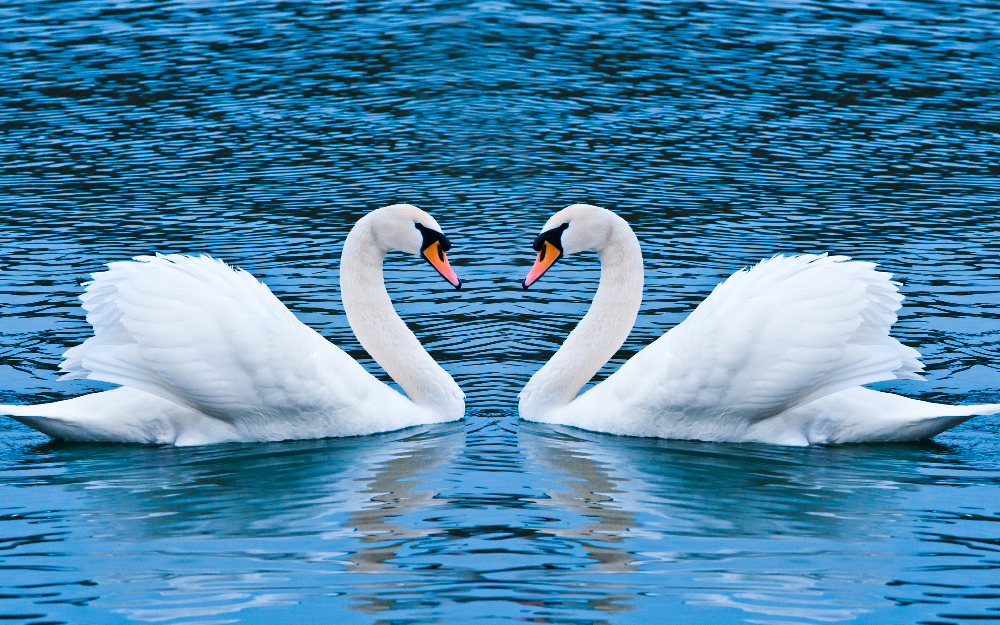
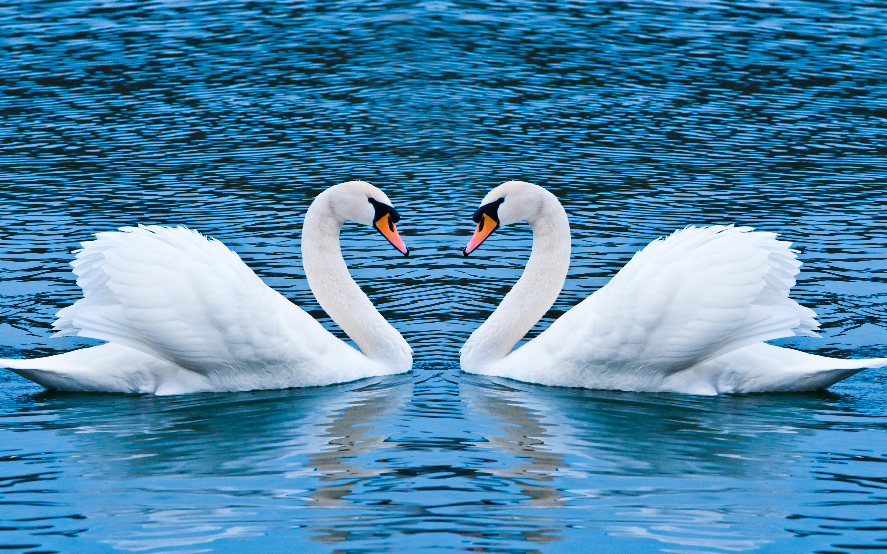
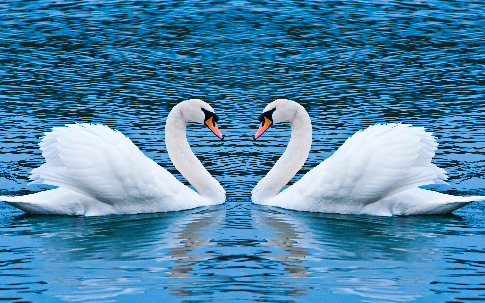

Birds Name Start with my LastName
Here there are two rows Characters of the lastname and birds name.When reducing the size slowly in web page the row with birds name is breaking first.Because Birds name length is very long while reducing the length from left side its reduced first

| Letter | Bird | Lake | Athlete |
|---|---|---|---|
| P | parrot | Pulicat lake | P T USHA |
| A | Abert's towhee | Ashtamudi lake | Abhinav Bindra |
| T | Turkey | Thirty island lake | Tendulkar |
| I | Ibisbill | Indian Lake | Ishant Sharma |
| U | Udzungwa Partridge | Ujjani lake | Usain bolt |
| S | Swan | Sambar | Sania mirza |
This bird is common in brushy riparian habitats in the Lower Sonoran desert zone and prefers to stay well-hidden under bushes. Though threatened by cowbird nest parasitism and habitat loss, it has successfully colonized suburban environments in the Phoenix, Arizona metropolitan area and may be fairly easily seen on the campus of Arizona State University. Despite its limited range, it is classified as a species of Least Concern in the IUCN Redlist, and there has been some range expansion along the Santa Cruz River as well as in Oak Creek Canyon near Sedona.
Description
The ibisbill (Ibidorhyncha struthersii) is a bird related to the waders, but sufficiently distinctive to merit its own family Ibidorhynchidae. It is grey with a white belly, red legs and long down-curved bill, and a black face and black breast band. It occurs on the shingle riverbanks of the high plateau of central Asia and the Himalayas.
DescriptionSwans are the largest extant members of the waterfowl family Anatidae, and are among the largest flying birds Swans' legs are normally a dark blackish grey colour, except for the South American black-necked swan, which has pink legs.
Description